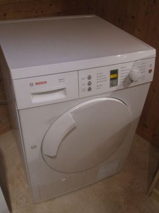

Microwave sharp display repair

Type: R-798(AL)
Description of failure
The displays background ligtning is defective. No display at all or the display turns on and off in a random way.
Troubleshooting
It was found, that typically one of the LEDs goes broken. Due to the series connection, all LEDs will fail. After shortcircuit the single broken LED, all others light up again. With one LED in short circuit, a current of 22 mA was flowing. So a replacement LED should be ordered with minimum 20 mA (real current is a bit lower, due to one more LED in the series connection). Steps to repair the background lightning:
Disassemble the operating panel of the microwave. This part can be diassembled separately, without disassembling the wave chamber.
Disassemble the PCB for the display, see also the figures
Remove the display from the PCB to have a direct view on the LEDs
Exchange all LEDs! Do not only replace one LED. The other LEDs are already damaged and will go broken some time in future.
Replacement LED
LED size is
0603Current of
20 mAChoose a LED color where the forward voltage drop is nearly the same as for the original green LEDs. Ideally choose green again. Also, red and orange LEDs have a forward voltage drop that is close to the green ones. Do not use white or blue LEDs, due to they have a significant higher forward voltage drop.
Conrad ordering number 180099